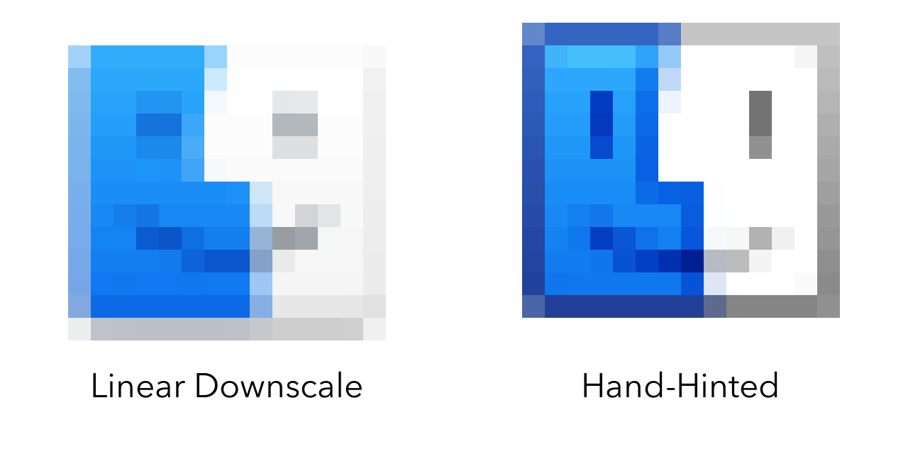
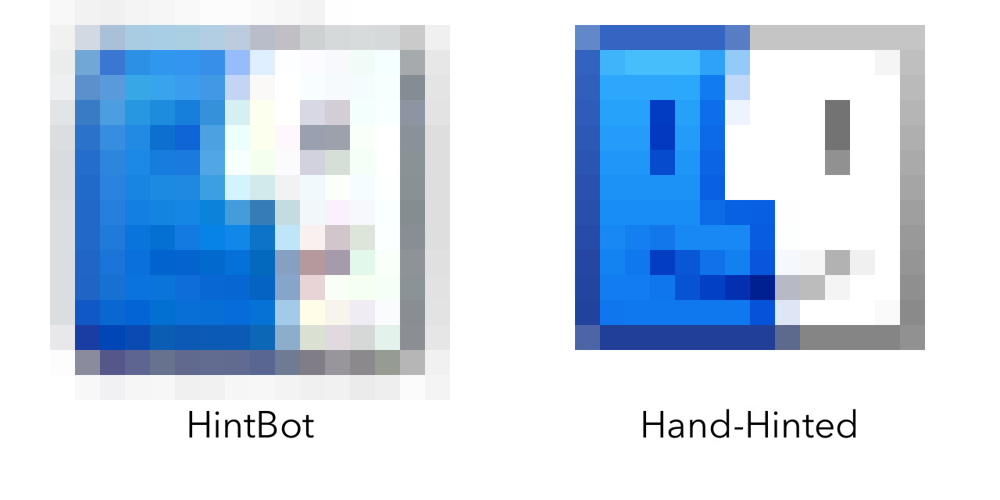

App Icons are designed at large sizes but must look nice at small ones. Icons are usually redrawn ("hinted") by hand at small sizes so that they look sharp:
I wrote a simple neural network called HintBot that attempts to hint icons automatically! You can test out a simple version in your browser.
State of the Bot
HintBot was trained on 150+ icons I've made over the years, sliced into pairs of 32×32 (source) and 16×16 (target) images (about ~4000 slices in total). For example:
Here's how HintBot does on the Finder icon from above (which it's never seen before):
Problems
HintBot is better than the linear downscaling from before (yay!), but it still suffers from several problems. In particular:
- HintBot doesn't understand pixel snapping. Although HintBot tries to add dark edges to things and sharpen details, it doesn't understand that the edges should be pixel-aligned.
- HintBot distorts colors. This is most visible as the colored artifacts in the image above, but also has a subtler incarnation–HintBot will sometimes make things transparent!
...and here is a (non-exhaustive) list of things I've tried to fix these issues:
- Switching to HSLA: I thought this might fix color distortion. It actually made it much worse, since the
Hdimension is not continuous (at least when using mean-squared-error)! - Data Augmentation: Getting more image data by transforming existing image data is common practice for computer vision problems. I tried adding more data through flips/90° rotations of my existing data, but didn't see substantial improvements.
- More Layers: More convolutional layers (tested up to ~8) did not appear to bring substantial improvements.
- Different Filter Sizes: I thought that switching to 2×2 or 4×4 (rather than standard 3×3) filters might help fix pixel-snapping behavior, but they did not.
- Reweighting Examples: Reweighting the slices corresponding to the smallest sizes (the ones which have the strongest hinting) introduced new distortions.
- Different Activation Functions: Different activation functions (
eluandlinear) did not appear to resolve these issues.
Possible Improvements
I'd like to try out the following modifications in future iterations of HintBot:
- More Data: There are a few other sources of icon data that I can use–this will require some adjustments to the pre-processing script, but should otherwise be straightforward!
- Tailored Loss Functions: Writing a loss function that penalizes hue distance (or alpha-channel inaccuracies) more strongly could help resolve color distortion.
- Switching to GANs: HintBot uses a standard convolutional network, but the most impressive image filtering I've seen has been Pix2Pix, which uses conditional GANs. They seem like overkill for this sort of project (since GANs are generally used for problems for which the output is largely underspecified), but would likely be more flexible.
HintBot is still very much a work in progress–if you have questions (or suggestions to fix the problems outlined above), contact me on Twitter!